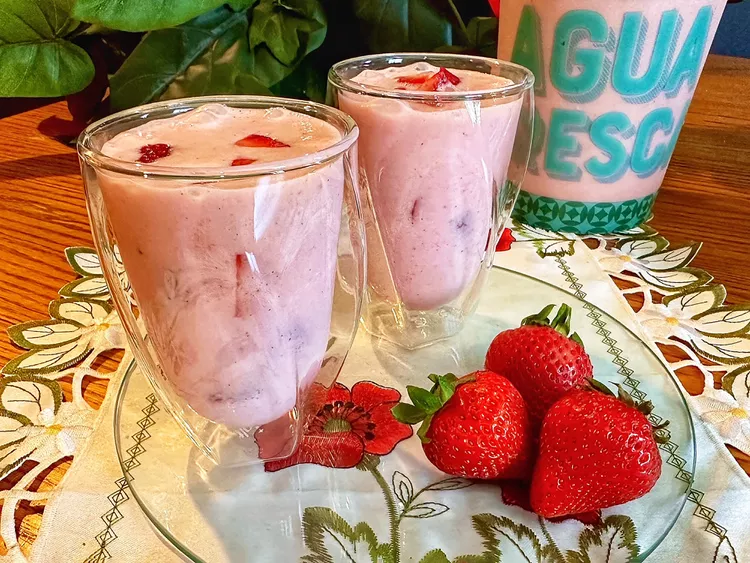

Agua Fresca de Fresas con Crema (Strawberries and Cream)

Description
This delicious creamy strawberry agua fresca will have your taste buds thinking you’re eating dessert!
Ingredients
- 2 1/2 pounds strawberries, hulled and diced, divided
- 2 cups water
- 1 (14 1/2 ounce) can sweetened condensed milk
- 1 (12 ounce) can evaporated milk
- 1 tablespoon vanilla
- 1/2 cup sugar, or as needed
- 3 cups ice cubes, or as needed
Steps
- Place 2 pounds of the strawberries and water in a blender cup and blend until smooth.
- Pour strawberry puree into a large pitcher. Add sweetened condensed milk, evaporated milk, and vanilla. Stir
until well incorporated. Taste; add sugar, a little at a time, as needed.
- Add ice cubes and stir. Gently stir in remaining 1/2 pound diced strawberries. Chill until ready to serve.